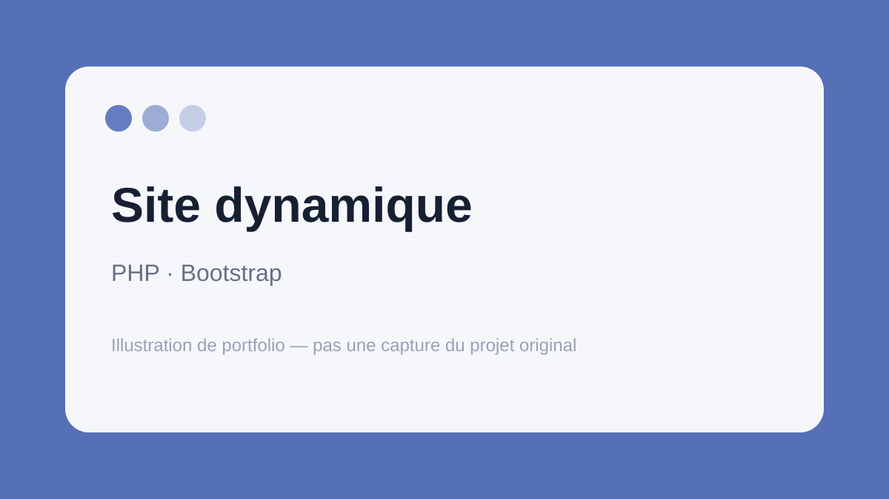

← Retour aux projets
PHP / Bootstrap
Site web dynamique
Développement d'un site web composé de plusieurs pages avec PHP et une interface responsive construite avec Bootstrap.

Ce que ce projet m'a apporté
Le projet m'a permis de passer d'une intégration statique à une structure plus dynamique et de travailler avec PHP dans un projet comprenant plusieurs pages et contenus.
Les fichiers originaux de ce projet ne sont plus disponibles. La fiche présente donc les fonctionnalités et technologies utilisées, sans fausse démonstration.